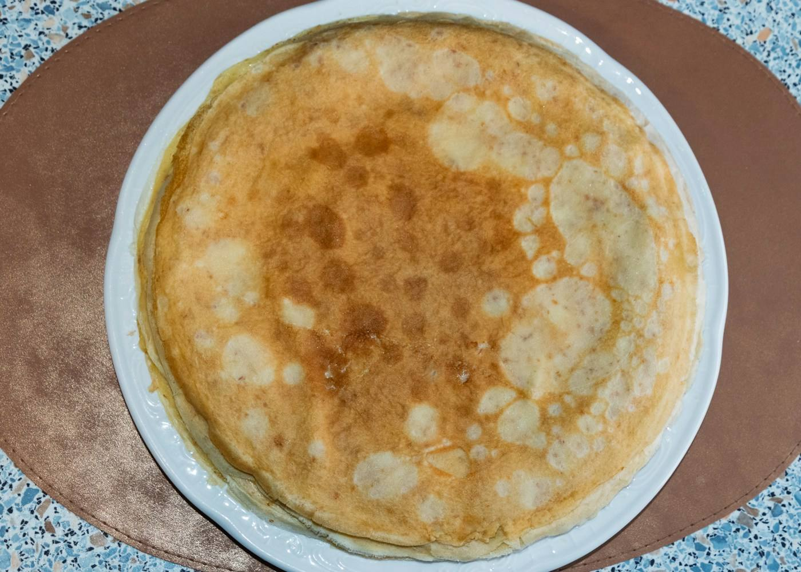

Une crêperie quai de la Croix, à Concarneau, avec la mer juste en face de la table.
Les galettes de blé noir, garnies salées, pour le repas.
Les crêpes de froment, sucrées, pour le dessert ou le goûter.
Les jours d'ouverture varient selon la saison. Appelez la crêperie avant de venir, ou consultez sa page Facebook.